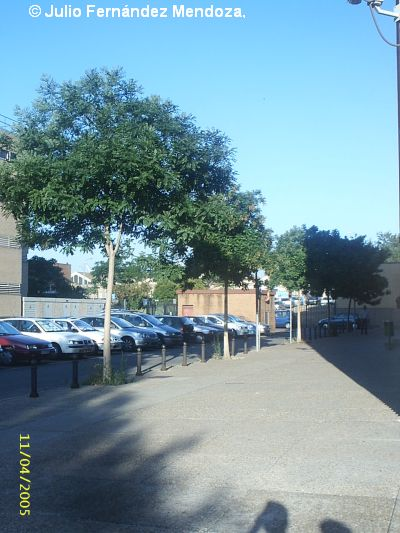
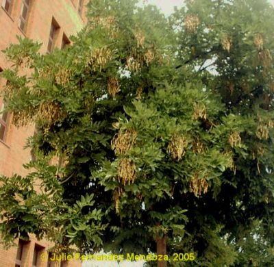

|
Styphnolobium
japonicum(L.)
Schott in Wiener Z. Kunst 3: 844 (1829)
Sophora
japonica L. |
Leguminosas |
| Acacia de Japón,
sófora |
Árbol caducifolio |
|
Árbol caducifolio de 5,5-6 metros de altura, pudiendo
llegar
hasta los 25 metros(1), porte esférico-ovoide y estructura
abierta, tronco con corteza de color marrón
oscuro-grisáceo y grietas longitudinales alargadas y poco
profundas. Hojas de 12-25 cm, alternas, imparipimnadas, con 9 a 15 folíolos de 2,5-5 cm x1,2-2,5 cm, elipticos, de color verde brillante, pelosos por el envés. Inflorescencias en panículas terminales de 15-30 cm (1). Flores
papilonaceas de 12-17 mm, de color blanco cremoso; cáliz
tubular
acampanado, de 4-5 mm, con 5 dientes cortos y algo
desiguales; todos
los pétalos con uña; los estambres son 10, libres o muy
cortamente soldados en la base; ovario estipitado,
cubierto de pelos
sedosos.
Fruto
de tipo legumbre, moniliforme, indehiscente, de 3-8 cm
(1), de color
verdoso y más tarde marrón, carnoso y de
diseminación tardía.
Florece en verano. |
 Conjunto de
sóforas junto al Edificio Rojo
Fotos: Julio Fernández Mendoza (2005) |
 |
Observaciones:
Del
griego stryphnós (ácido, amargo) + lobíon
(legumbre).
Sophora proviene de su nombre árabe, nombre de una especie de fuste oriental y el epíteto específico alude al Japón, lugar donde se encontró por vez primera y donde su cultivo es abundante. En Sevilla su cultivo es relatívamente reciente, habiéndose introducido como especie de rápido crecimiento en calles y nuevos jardines. |
| Área de
origen.- China, de donde debió pasar pronto a
Japón, donde fue descubierta para la ciencia. |
|
| Uso en el campus: 7 ejemplares jóvenes formando una línea, que fueron plantados tras construirse el edificio rojo, en 1997. | Localización: |
| (1) López Gonzales, G. (2001). Los árboles y arbustos de la Península Ibérica e Islas Baleares Tomo 2 | |
| Julio
Fernández Mendoza &
Carlos Romero Zarco, 2005 Versión 2: C.R.Z. (2026) |
|